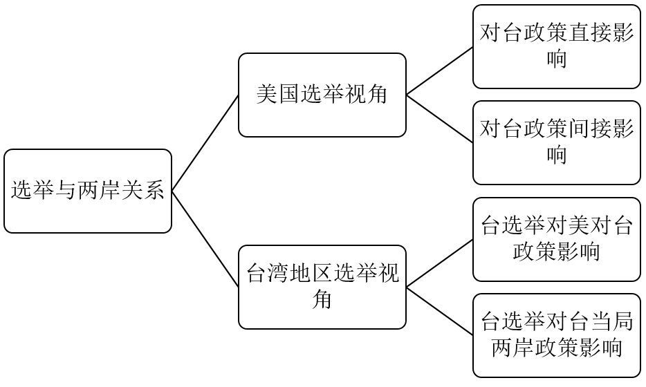
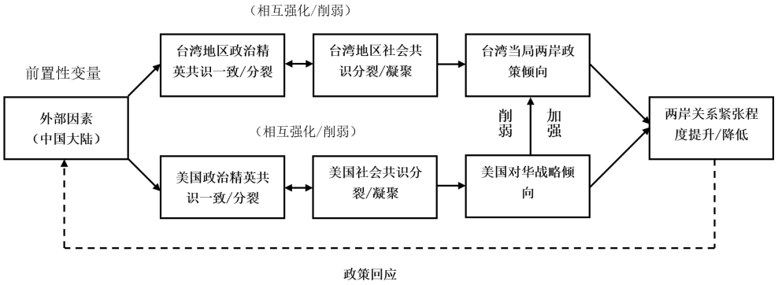
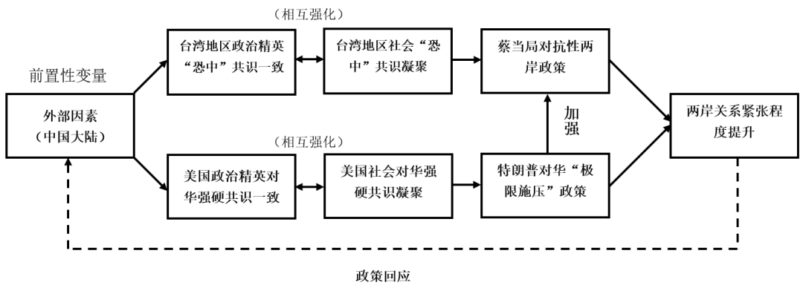
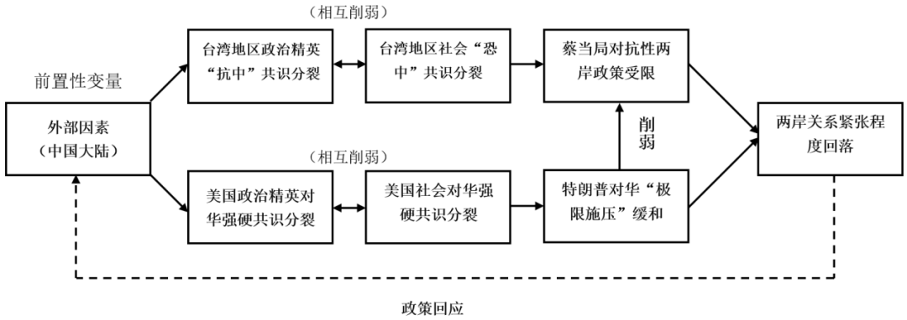
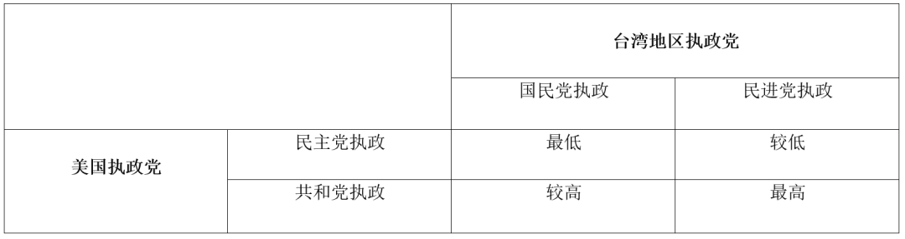

收录于合集

作品简介
美国与台湾地区的领导人选举对两岸关系的影响分析： 新古典现实主义的视角
The Impact of US and Taiwan Domestic Elections on Cross-Strait Relations: A Neo-Classical Realist Perspective
【作者】 黄继朝，深圳大学社会科学学院讲师；叶晓迪，本文通讯作者，广东外语外贸大学国际关系学院讲师，云山青年学者
【基金项目】 2020年度教育部人文社会科学青年基金项目“冷战以来美日干涉我国台湾问题的共识、分歧及其联动机制研究”（20YJCGAT001））；广东外语外贸大学人才引进科研项目“美国对华竞争导向战略转型与中国的对策研究”（X5219247）
【来源】 《台湾研究集刊》2020年第2期
摘要
美国总统选举与台湾地区领导人选举将如何形塑一段时期内的两岸关系走向，是本文试图探讨的核心问题。对于此问题，既有研究从美国与台湾地区各自的视角切入，形成了美国选举对台政策的“直接影响”和“间接影响”，以及台湾地区选举对“美国对台政策选择”和“台湾当局两岸政策选择”的影响四个解释视角。然而，既有研究的视角大都仅聚焦于单方内部选举对两岸关系的冲击，却忽略了美国与台湾地区同一选举周期所产生的“联动效应”。考虑到美台两地的选举周期具有一致性，这种联动效应对理解两岸关系的走向应具有重要的参考意义。有鉴于此，本文在修正新古典现实主义的基础之上，以中国的持续崛起为前置性变量，以美国与中国台湾地区的政治精英共识和社会共识的一致/分裂为自变量，构建一个能够连接美台领导人选举的分析框架。同时，为了展现其中的联动效应，本文还援引了2016年的美台领导人选举作为“解释性案例”，用以检证本文分析框架的运作逻辑。最后，结论部分基于分析框架对即将到来的美台2020年选举周期做了四种组合的预测，并辨析它们对两岸关系的影响程度。
【关键词】 美国选举；台湾地区选举；两岸关系；新古典现实主义
01
引言
2016年，美国与台湾地区分别进行了领导人选举， 被誉为“黑天鹅”的特朗普与带有强烈“台独”倾向的蔡英文各自上台执政，完成了新一轮政党轮替。可以看到，自2016年美台各自实现政党轮替以来，两岸关系较以往明显呈现一种更为紧张的状态。由于选举政治通常被视为行为体在一段时期内部政治共识的集中体现，[1] 且这种政治共识有可能进一步对行为体的内外政策产生明显的影响，所以2016年的美台领导人选举以及随后的两岸关系变化现象引发了几个值得关注的问题：美国与台湾地区的内部选举将对两岸关系的发展产生何种影响？[2] 其中具有何种运作逻辑？这种逻辑将如何形塑两岸关系的走向？
为了能够更好地回答上述问题，本文在批判性回顾既有研究的基础上，以新古典现实主义作为理论基底，将中国视为对美国和中国台湾地区产生压力的外部变量，选取“政治精英共识”和“社会共识”作为两大内部变量，尝试建构能够连接美台内部选举与两岸关系的理论框架。在此基础上，本文认为，在中国不断崛起的前提下，当美国与中国台湾地区的政治精英对华/对大陆强硬共识一致，且社会共识凝聚为其提供支持时，美国和台湾地区的对华政策/两岸政策的联动效应最强，对抗性将占主导地位，从而导致两岸关系紧张程度明显提升。
除了引言部分，本文由以下部分组成：第二部分对相关文献做出批判性的讨论，以便透视既有研究中存在的不足；在第二部分的基础上，第三部分基于新古典现实主义发展出一个新的分析框架，用以探讨美国和台湾地区在内部选举上所产生的联动效应及其运作逻辑；第四部分援引2016年美台领导人选举作为实证案例，用以检验本文分析框架逻辑的有效性；最后在结论部分总结本文的发现以及对展望2020年美台领导人选举后两岸关系的走向。
02 ****
文献回顾：既有研究及其不足
关于“内部的选举如何影响美国对台政策和台湾当局两岸政策”的问题，既有的研究文献可以分为两大视角：美国选举视角和台湾地区选举视角。其中，前者又可以细分为美国选举对美国对台政策的直接影响和间接影响；后者则进一步区分为台湾地区选举对美国对台政策的影响和对台当局两岸政策的影响。[3]具体文献分类如图1所示。

图1 既有研究分类（资料来源：作者自制）
（一）美国选举视角
美国选举视角可以进一步分为对台政策的直接影响和间接影响两个分支。前者指的是，美国选举如何直接影响对台政策；而后者指的是，美国选举如何影响其对华政策，进而左右对台政策的走向。
首先，关于直接影响的讨论主要集中在总统大选周期。民主党和共和党为了选举需要而将台湾问题视为相互攻讦的焦点议题之一，从而对其后续的对台政策产生不同程度的调整。郭震远认为美国在任总统在卸任前的大选周期中，在选战的关键时刻会在对台政策上做出一定调整，如扩大美台军事合作交流、增加对台武器销售等，目的是为同党候选人增加选票。[4] 相似地，郑文华强调，来自共和党的攻击是诱发政策调整的直接原因；共和党对克林顿政府对台政策软弱的批评引发美国国会“亲台”势力的反扑，对克林顿政府造成选情压力，从而使克林顿政府对台政策向“亲台”方向调整。[5] 如果大选后美国实现政党轮替，那么这种政策倾向将在继任的政府中较大程度上得以延续。[6] 例如，严安林就指出，特朗普正式就任总统后，他在候任阶段的对台政策获得延续，美台在高层往来、安全关系、经贸关系以及国会连线等方面都出现较大提升。[7] 当然，学者们也大都同意，这种调整更多是选举政治的产物，有明显的限度，服从于中美关系的大框架。[8]
其次，有关间接影响的讨论主要集中于美国选举导致对华政策的转变，对台政策服从于对华政策，因此也随之发生调整。例如，陆彬伯（Robert S. Ross）就指出内部因素，如选举和公众意见，将对中美关系产生重要的影响，进而对中美之间如台湾问题等敏感议题造成冲击，但内部因素的重要性却时常被忽略。[9] 罗伯特·萨特（Robert Sutter）以“李登辉访美”为例，认为当时共和党全面把持国会，强行通过了李登辉的请求，这不但引发了两岸的紧张态势，而且成为左右1996年美国总统大选的关键议题，凸显了选举等内部因素在对华战略和对台政策的重要影响。[10] 童立群基于美国国会视角指出，美国政治精英对中美关系发展的不满已经逐步成为国内共识；在将中国定位为“修正主义国家”后，美国国会通过涉台法案的方式加大打“台湾牌”的力度和广度，以此牵制中国。[11] 此外，还有研究进一步细化厘清了美国对华战略与对台政策之间的逻辑关系。叶晓迪以2015年新一轮美国对华战略大辩论为切入点，在分辨强硬、和缓以及维持现状三种不同政策立场的基础上，指出当美国对华倾向维持现状与和缓时，其对台政策将保持战略模糊；反之则会进入战略清晰的路径。[12]
（二）台湾地区选举视角
台湾地区选举视角也可以进一步分为对美国对台政策的影响与对台当局两岸政策的影响两大分支。
首先，台湾地区选举对美国对台政策的影响。究其本质而言，台湾地区选举最终在何种程度影响美国的对台政策是服从于美国整体战略利益考量。例如，杨洁勉在考察民进党首次获胜后美国对台政策的基础上发现，当陈水扁当局的作为与美国亚太战略利益一致时，美国对台政策会逐步清晰化。[13] 然而，这种清晰化是有限度的，即美国会避免因台湾问题而卷入中美冲突。因此，当陈水扁采取“急独”路线将两岸关系推向危险边缘时，小布什政府便出手加以管控和限制，避免美国战略利益受损。[14]台湾地区2008年再次实现政党轮替后，美对台政策又出现明显的转变。卜睿哲（Richard Bush）指出，当台湾当局采取维持现状政策，与美国战略需求相一致时，美国对台政策的支持力度将增大。他在考察马英九执政第一任期的基础上认为，台美关系在政治互信、人员交往和军事联系等方面有明显的强化。[15]
其次，台湾地区选举对台当局两岸政策影响。例如，张华基于2012年台湾“大选”指出，台湾民众的投票行为回归理性，追求两岸和平发展成为主流民意，这将为两岸和平发展的制度化提供强大的民意动力。[16] 台湾学者吴玉山发展了“选票极大化策略”作为台湾当局两岸政策选择的解释。他以“统独议题”和“经济安全议题”为民意原点，将台当局领导人的两岸政策选项划分为四个象限，并以陈水扁第二任期的选举为例指出，尽管陈水扁“急独”的本质并未改变，但为了选票的极大化，陈水扁还是采取了“新中间路线”，努力塑造符合主流民意的形象。[17] 换言之，在吴玉山看来，台湾地区的主流民意和选票的作用有助于“驯服”台当局领导人的两岸政策，使其不至于突破两岸关系的底线，这点即便在蔡英文执政时期也会有所体现。[18] 冯莉与胡晓波从政党政治发展的角度认为，2014年与2016年的选举结果反映了岛内群体力量的变化，蓝绿两党的实力、执政效能和政策主张正在趋同，这将有利于两岸关系的和平稳定，但同时也会使和平统一的进程陷入迟滞状态。[19] 与吴玉山的预测相似，冯莉与胡晓波也认为，岛内选举将一定程度限制和规范台当局领导人两岸政策，防止两岸关系滑入冲突陷阱。
（三）小结
基于上述文献的重新分类和对比讨论，不难发现，美国国内选举与台湾地区选举，或多或少地对各自的对台政策/两岸政策产生影响，这为本文确认了选举因素对两岸关系乃至中美关系作用的有效性。然而，既有研究在提供丰富的理论借鉴的同时，却也存在两大明显问题：第一，忽视了中国大陆的影响力。虽然不论是美国选举视角还是台湾地区选举视角都一定程度涉及中国大陆的因素，但并未将其作为主要自变量，这与现实政治不相符；第二，既有的研究发现了选举因素对两岸关系的直接和间接影响，但过分强调美国国内和台湾岛内的作用，并未对两者进行理论链接，忽视了两者可能产生的联动关系对两岸关系发展造成的冲击。有鉴于此，本文试图建构一个新的理论框架用以弥补既有研究存在的理论缺失。
03 ****
分析框架：修正式的新古典现实主义框架
由于本文试图构建一个能够解释美国国内选举与台湾岛内选举对两岸关系影响的分析框架，而这涉及政治行为体内部层次的因素分析问题，考虑到中国日渐强大的影响力，所以作者选择了兼顾内外因素的新古典现实主义作为分析框架的理论基底。一般而言，新古典现实主义的核心理论认为，对外政策理论需要将外部因素和内部因素相结合，因为外部因素与内部因素导致行为体政策选择的结果是不同的。如果外部因素是导致行为体政策选择的自变量，那么内部因素便是链接二者的干预变量。[20] 换言之，新古典现实主义试图以内部因素来弥补结构现实主义的理论缺失，增加对行为体政策选择的解释力和预测力。[21] 由于打开了行为体内部因素的“黑盒子”，所以新古典现实主义出现了类型繁多的内部因素的讨论，而其中公认系统性较高的，是由兰德尔·施韦勒（Randall L. Schweller）提出的变量。[22]
施韦勒从众多内部因素中提取了四种可能影响行为体对外政策选择的主要变量，包括：精英共识、精英凝聚力、社会凝聚力和社会共识。前两个变量决定了行为体的行动意愿，后两个变量决定了行为体的行动能力；同时，这四个变量共同决定了行为体的内部一致性（Coherence）。[23] 在此基础上，施韦勒根据四个变量的不同组合提出核心的假定：在面对外部因素变化时，行为体的一致性程度决定了它能否对外部的压力做出及时反应，亦即：一致性高做出及时反应的可能性更高，反之，反应滞后现象出现的可能性就更高。[24] 施韦勒对内部变量的抽取和核心假定的提出不仅代表着新古典现实主义系统性发展的一步，并且将此理论综合内外分析层次、跨越对外政策和国内政治两个研究领域的优势展现出来。
然而，直接将施韦勒的理论用来解释“美台内部选举对两岸关系影响”亦存在问题，主要体现在三点：第一，四个内部变量的组合仍然过于复杂，在不利于操作化和测量的同时，也不利于理论的简化。并且，这四个变量具有明显的重叠部分，可以加以合并：精英共识和凝聚力合并为“政治精英共识的一致/分裂”，社会凝聚力和共识合并为“社会共识的凝聚/分裂”。第二，施韦勒推论路径可以归纳为：外部因素→内部因素→政策选择，但在纳入内部因素后，施韦勒更多地是关注后一个因果链条（内部因素→政策选择）而忽视了前一个因果链条（外部因素→内部因素）的作用。第三，施韦勒的理论更多地是关注两个行为体之间的互动，并未涉及三方之间的互动。
有鉴于此，本文在修正施韦勒理论的基础上提出新的分析框架（如图2所示）。联系至本文所讨论的问题，所涉及的互动行为体包括中国、美国和中国台湾地区。其中，由于中国近些年来的快速崛起，在对台湾当局以及“台独势力”产生巨大威慑力的同时，也对美国的霸权地位造成战略压力；所以，根据本文的需要，中国作为三方互动的前置性变量，构成影响美国国内和台湾岛内政治精英共识和社会共识变化的诱因。[25] 具体而言，本文分析框架的运作逻辑如下：美国和台湾地区的政治精英作为压力的第一线接受者，他们的共识将有可能出现一致或分裂的现象，而这种现象由上至下地传递至社会内部，进而引发社会共识的一致或分裂现象；同时，社会共识也有可能反作用于政治精英共识的一致和分裂程度（如图双向箭头所示），影响美国对华战略和台湾当局两岸政策的倾向，最终导致两岸关系不同的紧张程度。[26] 两岸关系的紧张程度作为一种政策回应反馈至大陆方面，使大陆方面根据现实情况的不同调整和采取更具针对性的对美战略和对台政策。由此，这个新的理论框架不仅能够解释中国、中国台湾地区与美国三个行为体之间的互动关系，有效地连接美台内部选举的联动，还能在一定意义上拓展施韦勒的理论，即：外部因素→内部因素→政策选择→政策回应的因果链条，使其成为一个闭循环因果逻辑，有利于重复验证理论框架的有效性。

图2 修正式新古典现实主义分析框架
（资料来源：作者自制）
04
案例检证：以2016年美台领导人选举为例
基于前文的分析框架，本文选取2016年美国与台湾地区的领导人选举作为案例，用以检证分析框架的运作逻辑。关于选择这个案例的原因：首先，这个案例是最近一次的美国与台湾地区的领导人选举，跟当前形势关联紧密，对其进行案例分析具有重要的现实预测意义。其次，就政治环境而言，2016年美台内部选举中，不论是政治精英共识还是社会共识都在选举前后有着明显差别，具有显著性。
（一） 2016年美国总统选举与美国对华强硬共识的凝聚
自金融危机结束，特别是2010年中国超越日本正式成为世界第二大经济体以来，中美实力对比变化速率加快，加之中美在此期间因气候变迁会议、对台军售以及南海问题而产生明显分歧，使美国政治精英深感焦虑，将中国的外交行为解读为“中国强硬论”（Assertive China），导致美国国内对华认知中的负面因素有所上升。[27] 这种对华负面情绪经过2015年对华战略大辩论的发酵，推动了美国对华强硬共识的日趋形成。[28]而这也构成了特朗普竞选和执政的内部政治氛围，对特朗普的实际举措产生直接影响。
在竞选阶段，特朗普就曾多次对中国做出“盗窃美国就业岗位”“汇率操纵国”“进行不公平贸易” “中国正在强暴美国”等激烈的指责攻击，并且强调要对中国进行严厉报复。[29] 在美国国内民粹主义与右翼民族主义日益喧嚣的背景下，特朗普高调宣扬的 “制裁中国”的强硬姿态正好迎合了美国社会对华负面认知的一面，符合多数民众的诉求。[30] 2016年11月，在竞选目标与社会主流民众诉求相契合的助推下，特朗普得以胜选。执政后，在政治精英阶层对华强硬共识凝聚的氛围下，特朗普政府的对华战略发生骤变，采取了一系列对华攻势，主要反映在安全与经济领域。其一，安全领域。2017年12月18日，特朗普政府发布它的第一份美国国家安全战略（National Security Strategy）报告。报告中数十次将中国定义为美国“战略竞争对手”，其对华安全威胁论调在历届美国国家安全战略报告中堪称之最。[31] 此后，《国防战略报告》再次突出中国的“修正主义国家”身份。[32] 其二，经济领域。上台后不久，特朗普政府就通过否决中资企业收购美国半导体公司、对华发起“301调查”等逐步推进对华贸易反击计划。2018年3日始，特朗普政府更是通过粗暴启动报复性关税等措施发动对华贸易战。进一步分析，特朗普对华强硬政策的出台，其背后离不开美国社会对华强硬共识的作用。
首先，在特朗普政府推动一系列对华“极限施压”的强硬政策之时，政治精英阶层日益凝聚的对华强硬共识为其提供显著支持。例如，2017年2月，夏伟（Orville Schell）和谢淑丽（Susan L. Shirk）主导的由美国政商学界中国问题专家组成的跨党派特别工作组发表了一份名为《美国对华政策：给新政府的建议》（U.S. Policy Toward China: Recommendations for a New Administration）的政策报告，其中明确指出，互惠（reciprocity）而非接触应是新政府处理对华关系的首要原则，也只有立基于互惠原则，才能形扭转美国现有“吃亏的局面”。这种互惠原则的政策建议与特朗普在对外关系中强调相对收益倾向完全契合，为特朗普政府提供了重要的理论支持。[33] 美国政治精英的对华强硬共识凝聚还反映在他们对前首席战略顾问斯蒂芬•班农（Steven Bannon）对华判断的认同上，即他们认为“班农的观点是正确的，中国在经济上打击了美国，但美国政府和企业却多年来无动于衷”。[34]
其次，美国社会对华负面共识的强化也为特朗普的对华强硬政策提供了“养分”。关于这点，近年来特别是特朗普执政以来美国民众对华态度的变化值得高度关注，因为民众的态度直接反映了社会共识的凝聚程度。在总体层面，根据皮尤研究中心的长期调查，2005~2016年间，美国民众对华负面认知出现明显上升，持有负面态度的比例从2005年的35%增长至2016年的55%，在11年间增长了20%，这形塑了特朗普执政的社会氛围。更值得注意的是，在特朗普正式发动对华贸易战后，超过60%的受访者认为美国值得冒险与中国展开关税战；在这部分受访者中，又有高达88%的人认为美国将最终赢得关税战。[35] 尽管民众对中美贸易战的支持与反对态度基本持平，但这也意味着，有相当一部分美国人认为贸易战值得一试，并坚信美国能获得最终的胜利。
同时，在前期共和党全面执政的优势背景下，特朗普政府重用大量极端反华“鹰派”人物，如班农、纳瓦罗、彭斯、蓬佩奥等人，主导对华战略，通过歪曲夸大“中美贸易不公”的事实营造“中国经济威胁”的舆论，在一定程度上进一步塑造了美国整体社会对华强硬共识的一致性。对此，耶鲁大学研究员斯蒂芬•罗奇(Stephen S. Roach)曾撰文分析，特朗普政府通过一些轻率的证据、分析与结论来诋毁中国经济，而美国民众也很容易“上当受骗”接受这种“捏造的叙事”（false narrative）。[36] 这将进一步操控整体社会共识以强化对政府对华实施强硬政策的支持。
基于上述讨论，不难发现，美国的政治精英共识、社会共识与政府对华政策倾向之间存在互动关系。更具体而言，中国近年来的强势崛起对活跃在一线的美国政治精英造成巨大冲击，使他们产生深深的焦虑感，促成他们在美国国内层面的对华战略反思，并在社会层面塑造对华强硬转向的政治氛围，加深一般民众的对华忧虑感。这种政治氛围在一定程度上帮助了具有对华强硬基调的特朗普竞选成功，并将对华战略反思的影响力扩展至政策层面。为了履践“美国优先”的核心理念，特朗普对华采取具有强烈相对收益倾向的政策，与政治精英所提倡的互惠原则的逻辑相契合，而美国民众对贸易战值得一试的心态则进一步强化了特朗普政策的合法性，使其“师出有名”地执行强硬的对华政策。
（二） 2016年台湾地区领导人选举与岛内“恐中”情绪的聚拢
马英九执政前中期，在承认“九二共识”的“和中”基调上，两岸关系经历了一段“蜜月期”，在政治、经济以及社会等领域都呈现出全方位密切交往的局面，而这些总体上也反映出彼时台湾主流社会对大陆的亲善共识。但是2014年以后，岛内的“亲中”共识在一定程度上开始被消解，部分群体对于大陆的压力感知逐步增强。2014年3月的“反服贸运动”可以看做是这种共识开始消解的重要标志。台湾《联合报》在“反服贸运动”后所做的“两岸关系年度大调查”显示，尽管两岸关系的各大面向在马英九时期获得较明显的进展，但台湾地区民众对大陆的总体观感却出现逆转，对政府和民众的负面观感比例分别达到57%和51%。[37] 2014年年底的“九合一”选举国民党的大败进一步反映了台湾地区部分民众对于大陆负面认知的发酵。应该认清，“反服贸运动”与2014年“九合一”选举中的“蓝绿翻转”，其背景原因固然主要是自身境况持续恶化、现状满足感持续降低的台湾社会部分群体（多是青年）对于社会资源分配不公、马当局施政无能的不满以及失望，[38] 但正是在岛内“绿营”势力的煽动诱导下，这部分人对于当局的不满情绪逐渐被导向对于两岸关系乃至大陆疑惧的负面认知。
2016年1月，民进党候选人蔡英文以56.12%的高得票率大胜国民党候选人朱立伦（31.04%）与亲民党候选人宋楚瑜（12.84%），当选台湾地区领导人。从竞选政见来看，蔡英文区别于其他候选人的最鲜明特征即在于她对“九二共识”的否认以及对于大陆的强硬态度。2016年1月，在关键的最后一轮政见会中，蔡英文就重点表达了“不存在‘九二共识’”以及“警惕防范”大陆的政见观点。因此，如果说蔡英文的当选反映了一定的民意诉求，那么在一定程度上可以说明2014年以来民进党大肆煽动台湾社会“恐中”情绪的凝聚颇有成效。当然，从政党政治的运作逻辑来看，2016年民进党得以重返执政，本质上还是在于台湾社会主流民意对马英九与国民党执政的强烈不满。但在民进党的舆论操弄下，马英九当局“亲中”的观念又被刻意塑造并放大化。在此背景下，首先，因马英九执政而利益受损的政治精英的“亲中”共识有所消散；进而，民进党积极渲染形塑了台湾社会相当部分民众对大陆疑惧的负面共识。总体而言，自2014年始，依托台湾社会整体上对于马英九当局执政不满的共识基调，“绿营”与“台独”势力就开始蓄意煽聚政治精英与一般民众对于大陆的负面共识。到2016年，在选举氛围的刺激下，民进党为了赢得选战，更是不遗余力地大肆扭曲丑化马英九的“亲中”政策、两岸交往以及大陆的形象，从而导致越来越多对国民党当局不满的民众之大陆认知也被引导走向偏差化。
最后，2016年上台之后，蔡英文当局挟其所建构的所谓“恐中”社会共识，在两岸关系上采取了一系列以“台独去中”为核心的对抗性政策。早在2016年5月的就职演说中，蔡英文就只是承认“1992年两岸两会会谈的历史事实（简称“九二史实”）”[39] 而对于“九二共识”持模糊态度。国台办认为这是蔡英文当局对两岸同胞的“一份未完成答卷”。[40] 之后，蔡英文更是一直不肯表态接受“九二共识”直至明确拒绝“九二共识”。[41]这有部分原因是蔡英文所谓“九二史实”的说法获得台湾地区民众的支持。根据台湾指标民调所做的调查，57.1%的台湾地区民众认同蔡英文“九二史实”的说法，仅有22.2%的受访者不认同；在交叉比对面向，泛绿民众对蔡英文说法的认同比例达到了83%，泛蓝民众30.1%认同，中立民众41.5%认同。[42] 可见，除了泛绿民众，蔡英文还获得部分泛蓝和中立民众的支持，使其坚定地在“九二共识”上采取模糊的表态。在岛内民众的支持下，顽固拒绝“九二共识”是蔡英文当局对抗性大陆政策的基调与核心内涵。此外，蔡当局还陆续施行了转型正义的“去中国化”改革、污名化大陆“惠台”措施、限制两岸交往、对外“正名”等“仇中”“反中”策略措施，大力推进“实质台独”路线，以实现其“台独”的本质目标。
（三） 美国对华强硬共识凝聚与台湾“恐中”情绪聚拢联动下的两岸紧张局势
虽然台湾问题是中国内政问题，但长期以来在各类复杂因素的影响下，美国一直都是影响台湾问题最重要的外部因素，两岸关系在很大程度上亦从属于中美关系。并且，随着相对实力的不断增强，两岸关系的主导权逐渐掌控在大陆手中。这也使中国大陆成为美国和台湾地区政治精英和社会共识的重要因素。前述分析，伴随着选举体现的内部共识的变化，2016年上台之后，特朗普的对华战略与蔡英文的大陆政策都从温和逐渐转向强硬。更关键的是，在美台各自内部的对华强硬共识呈现一致性倾向的情况下，特朗普“极限施压”的对华政策将强化蔡英文当局的两岸对抗政策。更具体而言，在美国与台湾地区对华政策/两岸政策同时发生强硬转变的联动效应下，两岸关系的紧张态势日益升高，主要表现在两方面：
首先，两岸关系失控的内生性风险不断提升。2016年蔡英文上台之初尚在“台独”问题上有所遮掩，但不久就开始在政治、经济、社会、文化等领域全方位推进其以“去中国化”为核心的“台独”路线。蔡当局的“台独”实践不仅造成两岸关系走向“冷对抗”，也使两岸关系的失控风险日益升高。这种内生性风险主要体现为两点：其一，随着在“台独去中”的道路上渐行渐远，蔡英文当局在“台独”议题上进一步铤而走险的几率也会增大，例如在“法理台独”与“去中国化”上采取更加冒进的做法。而一旦如此则很可能会触碰到大陆对台政策的底线，进而促使大陆不得不采取更加强硬的反“台独”措施，最终造成两岸关系的失控。其二，两岸制度化沟通与协商谈判机制中断。由于蔡英文当局一直不肯接受体现政治互信的“九二共识”，导致两岸协商机制完全中断，不能充分地沟通交流也使得两岸相互间存在更大的错判误判风险。
其次，台海局势突变的外生性风险显著增大。外生性风险主要涉及国际层面影响台海局势稳定的不安定因素，主要也有两点：第一，特朗普政府在台湾问题上的频繁“挑事”动作，显著增大了台海地区的潜在风险。在2016年12月上任之前，特朗普就直接与蔡英文通话，打破“断交”以来美国总统或候任总统不与台湾地区领导人通话的外交惯例，造成恶劣影响。上台之后，特朗普更是武断轻率地推动了一系列挑衅中方的对台政策，通过签署《与台湾交往法》、将涉台防务纳入美国国防法案等手段不断提升美台在军事安全、政治交往等领域的实质关系。而特朗普政府的这些“法制化”的涉台政治安全动作给台海局势带来了重大的潜在风险。第二，蔡英文上台后极力拉拢美日“抗中”，积极策动台湾在国际上的“台独正名”动作，也使得台湾问题愈来愈成为国际社会敏感而不安定的激发点，导致台海局势的外生性风险明显增加。
进一步分析，在两岸关系紧张态势升级、台海局势内外风险提升的背后，可以很清晰地看到美国与台湾地区对华/对大陆强硬政策的联动效应。一方面，在特朗普政府主导的对华强硬共识的影响下，美国更为激进地推进其“以台制华”战略，施行了一系列武断轻率的涉台挑衅动作，在台湾问题上进行了突破性的干预与介入。另一方面，在感知到特朗普政府对华强硬的基本共识之后，蔡英文当局自觉可以仰仗美国“撑腰”、获得美国的充分支持，并利用岛内“恐中”的社会共识作为民意支持，顽固施行其对抗性的大陆政策，并任意放肆地推行全方位“实质台独”的政策。例如，在2018年“双十讲话”中，蔡英文对大陆异常强硬的表态，被视为是对不久前美国副总统彭斯（Mike Pence）在哈德逊研究所（Hudson Institute）的尖锐对华政策演说的跟风呼应。讲话中蔡英文专门用彭斯的话来背书，称彭斯副总统也公开谴责中国大陆打压台湾地区“外交”，并且肯定台湾的民主制度。[43] 显然，正是美国方面通过涉台法案、召回与台“断交”三国大使以及彭斯讲话等对华强硬表现，给予了蔡英文当局对大陆采取强硬对抗姿态的信心。简言之，美国对华强硬共识强化了蔡英文两岸政策的强硬对抗趋向，从而提升了两岸关系的紧张程度。
（四）案例小结
基于以上案例的分析，可以归纳梳理出2016年美台内部各自的领导人选举对于两岸关系的影响作用机制。一方面，中国相对实力的增强对美国政治精英造成了巨大的压力，使他们开始进行战略反思，对华强硬转向的共识开始浮现；同时，美国民众近年来对华的负面认知强化了政治精英的反思效果，助推特朗普的胜选，以“极限施压”的方式进一步实质化了美国对华强硬的政策效果。另一方面，在马当局执政不力的前提下，台湾地区政治精英的“亲中”共识开始消散，民进党为首渲染的“恐中”共识开始集聚。随着“恐中”共识进一步在台湾岛内蔓延，民进党借此操控台湾民众对大陆的负面认知，为其改变两岸政策提供所谓的民意支持，强行塑造自身的“合法性”。在“反华”与“台独”势力的煽动引导下，美国国内与台湾岛内分别汇聚了强硬的对华/对大陆共识，进而驱动了特朗普与蔡英文对华/对大陆的对抗性政策。更为关键的是，特朗普对华“极限施压”的政策给蔡英文当局传递了错误的信息，使蔡英文误认为美国将“不遗余力地提供保护”，而非随时可以“弃车保帅的棋子”。这种错误的信息传导使蔡英文当局“挟洋自重”，进而明显强化了其对抗性的两岸政策，最终造成两岸关系紧张态势的提升（如图3所示）。

图3 2016年美国与台湾地区的领导人选举对两岸关系影响机制
（资料来源：作者自制）
以2016年美国与台湾地区的领导人选举作为“解释性案例”，可以在一定程度上支撑论证本文所提出的修正式新古典现实主义分析框架的有效性。或许单一案例的验证方式将影响通则性，但本文的分析框架仍适用于其他时期，包括美国与台湾地区“中期选举”的案例分析。例如，2018年美国与台湾地区内部选举所产生的联动效应也为本文分析框架的有效性提供了支撑。2018年，美国与台湾地区分别举行了中期选举与 “九合一”选举。美国方面，仅执政两年，特朗普便在国内遭遇了“分立政府”， 导致美国国内政治精英在对华强硬政策的选择上产生分歧，使原本相对一致共识出现明显的分裂。此分裂趋势可能随着民主党掌控国会众议院而对特朗普的施政产生明显掣肘。同时，核心政策的效果不佳也使美国民众对特朗普执政满意度长期处于历史的新低水平。这意味着，美国社会在2016年选举前后所凝聚的对华强硬共识也出现逐步消散的趋势。在精英共识和社会共识同时分裂的共同掣肘下，特朗普政府的对华“极限施压”政策逐渐出现缓和趋势。台湾方面，蔡英文仅执政两年，便遭遇2018年“九合一”选举“绿地变蓝天”政治版图变动，说明在当时民进党在政治精英层面操纵形成的“恐中”共识出现分裂，“亲中”或“友中”认知有所回归。此外，在社会层面，2018年选举的大败也意味着蔡英文“意识形态挂帅”和“政策空心化”的两岸政策不得人心，更具务实性的两岸关系需求明显上升。更为重要的是，特朗普对华政策的缓和亦将削弱与制约蔡英文当局的对抗性政策，最终带来两岸关系在前期被提升的紧张态势有一定程度的回落（如图4所示）。需要说明的是，两岸关系紧张态势的回落是相较于2016年选举后而言，并非意味着两岸关系已然打破“冷和平”状态。由于篇幅所限，本文不作更为深入的案例分析。

图4 2018年美国与台湾地区的中期选举对两岸关系影响机制
（资料来源：作者自制）
05
结论
由于选举周期相近且政党轮替的规律相对一致，美国与台湾地区的选举过程和结果向来对两岸关系有着重要的影响。既有研究尽管从美国与台湾地区各自的视角分析了选举因素对两岸关系的冲击，但却在很大程度上忽视了美国与台湾地区内部的选举所可能产生的“联动效应”。有鉴于此，本文在批判和吸收现有文献的基础上，以新古典现实主义为理论基底，将政治精英共识与社会共识作为最主要的解释变量，构建了一个连接美国选举和台湾地区选举联动效应的分析框架。根据分析框架，辅之以前文基于2016年选举的案例分析，不难发现：（1）当美国与台湾地区内部的政治精英（强硬）共识一致、社会共识凝聚时，其对华政策和两岸政策对抗面向将相对一致，两岸关系紧张程度将提高。同时，根据分析框架逻辑进一步推理，亦可以提出另一个相对的论点：（2）当美国与台湾地区内部政治精英共识出现分裂、社会共识消散时，其对华政策和两岸政策将出现分歧，两岸关系紧张程度可能会有所回落。此结论在2018年美国中期选举与台湾地区“九合一”选举之后已有初步体现。选举后，美国与台湾地区的对华/对大陆强硬共识都有所消解，从而导致其对华/对大陆的强硬政策有所调整，最后两岸关系的紧张状态亦有一定回落。
值得进一步说明的是，美台内部选举对两岸关系的影响作用呈现出两个主要特征：其一，在美国对华政策与台湾地区两岸政策的联动效应中，美国的对华认知与政策处于主导地位，其对于台湾地区的大陆认知与政策具有单向的引导作用。因此，相比于台湾地区的内部选举，美国国内选举对于两岸关系的影响要更为显著。其二，通常情况下，仅有在美国与台湾地区内部选举所呈现的对华/对大陆的强硬共识达成一致的情况下，才容易造成两岸关系的紧张态势，给两岸关系带来高风险，而美国与台湾地区任何一方内部的强硬共识出现分裂倾向，则都可能缓解两岸关系的紧张。
最后，基于本文的分析框架，可以对未来美国与台湾地区的领导人选举后的两岸关系进行一定预测。就近期而言，2020/2021年美台的选举将产生以下四种情况（如表1所示），以两岸关系紧张程度的高低排序分别为：（1）共和党+民进党——尽管这仍为最高紧张度的组合，但也有可能会因为美台内部的政治精英和社会共识的进一步分裂与消散而持续回落；（2）共和党+国民党——由于我们认为美国的对华政策具有主导作用，所以非民进党领导人的两岸政策仍将受到美国的影响；（3）民主党+民进党——考虑到民主党虽然也具有一定的对华强硬共识，但在政策执行的程度上有所不同，因而所导致两岸关系紧张程度较之于共和党的情况低；（4）民主党+国民党——由于民主党对华采取“极限施压”政策的概率较低，且非民进党的台湾当局领导人也将避免直接否认“九二共识”，以此与蔡当局的做法相区隔，所以这个组合对两岸关系造成的紧张程度应是最低的。2020年台湾地区领导人选举已然结束。在民进党继续执政的前提下，美国即将到来的总统大选的结果成为决定未来四年两岸关系紧张程度高低的最关键变量。

表1（资料来源：作者自制）
注释：
[1] 施雪华：《论西方国家选举政治的属性、功能与规则》，《社会科学研究》2013年第2期，第51-57页。[2] 值得说明的是，由于领导人选举在选举政治中的关键作用，本文所涉及的“美国与台湾地区内部选举”主要是指以领导人选举为主，中期选举为辅的两种选举类型。[3] 考虑到文献回顾需要从总体层次进行检视，因此，在文献综述部分并未细致区分美国与中国台湾地区 的内部选举是属于“领导人选举”还是中期选举。[4] 郭震远：《2000年的美国总统选举与美国的对台湾问题政策》，《和平与发展》2000年第3期，第40页。[5] 郑文华：《2000年美国总统选举对美国对台政策之影响》，《台湾研究》2000年第1期，第76-80页。[6] 王公龙：《美国保守派的对台政策主张及其影响》，《台湾研究》2008年第5期，第48-53页。[7] 严安林：《特朗普就任美国总统以来美台关系：进展、前景与影响因素》，《台湾研究集刊》2018年第3期，第1-9页。[8] 牛军：《布什政府台海政策透视》，《国际经济评论》2001年第1期，第27-28页。[9] Ross, Robert S. “The Strategic and Bilateral Context of Policy-Making in China and United States: Why Domestic Factors Matter?” in Robert S. Ross eds., After the Cold War: Domestic Factors and U.S. China Relations, New York: M. E. Sharpe, 1998, pp. 33-35.[10] Sutter, Robert G. “Domestic Politics and the U.S.-China-Taiwan Triangle: The 1995-1996 Taiwan Strait Conflict and its Aftermath,” in Robert S. Ross eds., After the Cold War: Domestic Factors and U.S. China Relations, New York: M. E. Sharpe, 1998, pp. 72-73.[11] 童立群：《美国国会重要涉台法案/决议案（2016-2018）：内容、特质及影响》，《台湾研究集刊》2019年第4期，第41-53页。[12] 叶晓迪：《美国对华战略与对台政策间的逻辑关系辨析：以新一轮对华战略大辩论为分析视角》，《台湾研究集刊》2018年第6期，第43-54页。[13] 杨洁勉：《台湾政局变迁后美国对台政策的调整及影响》，《外交评论》2000年第3期，第51-57页。[14] Bush, Richard C. Untying the Knot: Making Peace in the Taiwan Strait, Washington: Brookings Institution Press, 2005, pp. 245-266.[15] Bush, Richard C. Uncharted Strait: the Future of China-Taiwan Relations, Washington: Brookings Institution Press, 2013, pp. 69-117.[16] 张华：《2012年台湾“大选”选民投票行为新特点及其对两岸关系的影响研究》，《台湾研究集刊》2012年第5期，第29-31页。[17] Wu, Yu- Shan, “Taiwan’s Domestic Politics and Cross-Strait Relations”, The China Journal, No. 53, 2005, pp. 35-50.[18] Wu, Yu-Shan. “Heading towards Troubled Waters? The Impact of Taiwan’s 2016 Election on Cross-Strait Relations,” American Journal of Chinese Studies, Vol. 23, No. 1, 2016, pp. 73-75.[19] 冯莉、胡晓波：《台湾地区政党政治的发展度两岸关系的影响》，《政治学研究》2016年第2期，第40页。[20] 陈志端、刘丰：《国际体系、国内政治与外交政策理论》，载陈志端、刘丰主编：《国际体系与国内政治：新古典现实主义的探索》，北京：北京大学出版社，2015年，第18-19页。[21] 唐小松：《外交政策理论建构的新发展：“新古典现实主义流派”评介》，《国际论坛》2000年第4期，第45-49页。[22] 关于新古典现实主义多种类型内部因素的总结，请参见：Norris M. Ripsman, Jeffrey W. Taliaferro and Steven E. Lobell. Neoclassical Realist Theory of International Politics, Oxford: Oxford University Press, 2016, chapter 1.[23] Schweller, Randall L. “Unanswered Threats: A Neoclassical Realist Theory of Underbalancing,” International Security, Vol. 29, No. 2, 2004, pp. 168-170.[24] 兰德尔·施韦勒：《没有应答的威胁：均势的政治制约》，刘丰、陈永译，北京：北京大学出版社，2015年，第10-12页。[25] 值得说明的是，两岸关系始终属于中国内政事务，而本文所使用的外部因素是对于台湾岛内而言的一个相对的概念。[26] 台当局的两岸政策毕竟从属于中美关系的大框架。因此，当台美倾向一致，美国的对华战略有可能加强台当局两岸政策的效果，如奥巴马政府对马英九当局支持；反之，美国将可能抑制台湾当局的两岸政策，如小布什政府对陈水扁“急独”路线的抑制和管控。[27] 关于“中国强硬论”的讨论，代表性研究请参见：Thomas J. Christensen. “The Advantage of an Assertive China: Responding to Beijing’s Abrasive Diplomacy,” Foreign Affairs, Vol. 90, No. 1, 2011, pp. 54-67; Alastair Iain Johnston. “How New and Assertive is China’s New Assertivness?” International Security, Vol. 37, No. 4, 2013, pp. 7-48.[28] 关于此次美国对华战略大辩论的讨论，请参见：陶文钊：《美国对华政策大辩论》，《现代国际关系》2016年第1期，第19-28页；李海东：《当前美国对华政策的辩论、选择与走势分析》，《美国研究》2016年第4期，第9-36页。[29] Trump, Donald. Great Again: How to Fix Our Crippled America, New York：Threshold Editions, 2016, pp. 58-59.[30] 根据皮尤研究中心（Pew Research Center）在2015年所做的一份研究报告显示，89%的美国民众认为，美国工作岗位流向中国是严重的问题，其中高达60%的受访者更是用“非常严重”表态；同样地，86%的受访者感到中美的贸易逆差是严重的问题，以“非常严重”表态的也达到53%。参见：Richard Wike. “Americans’ Concerns about China: Economics, Cyberattacks, Human Right Tio the List,” Pew Research Center, September 9, 2015, https://www.pewresearch.org/global/2015/09/09/americans-concerns-about-china- economics-cyberattacks-human-rights-top-the-list/, 2019-08-01.[31] “National Security Strategy of theUnited States of America,” The White House, Decmber 17, 2017, https://www.whitehouse.gov/wp-content/uploads/2017/12/NSS- Final-12-18-2017-0905-2.pdf, 2019-08-01.[32] “Summary of 2018 National Defense Strategy of the United States of America,” The Department of Defense, Juanary 19, 2018, available at: https://dod.defense.gov/Portals/1/Documents/pubs/2018-National-Defense- Strategy-Summary.pdf, 2019-08-01.[33]Schell, Orville and Susan L. Shirk, US Policy towards China: Recommendations for a New Administration, New York, 2017, pp. 25-26, 65.[34] Long, Heather. “Think what you Want about Steve Bannon, But He’s Got a Good Point on China,” The Washington Post, August 17, 2017, https://www.washingtonpost.com/news/wonk/wp/2017/08/17/think-what-you- want-about-steve-bannon-but-hes-got-a-good-point-on- china/?noredirect=on&utm_term=.393fe88a56e0, 2019-08-02. [35] Higgins, Sean. “Almost Two-thrids of American Support Tariffs on China: Poll,” Washington Examiner, April 9, 2018, https://www.washingtonexaminer.com/policy/economy/almost-two-thirds-of- americans-support-tariffs-on-china-poll, 2019-08-03. [36] Roach, Stephen S. “America’s False Narrative on China,” Project Syndicate, April 26, 2019, https://www.project-syndicate.org/commentary/america-false-china-narrative-by- stephen-s-roach-2019-04, 2019-08-04.[37] 《台媒公布2014年两岸关系调查，对大陆负面观感居多》，人民网，2014年9月16日，http://military.people.com.cn/BIG5/n/2014/0916/c172467-25667705.html，2019-08-05.[38] 黄继朝：《台湾青年政治参与的新态势及其影响——基于台湾2014年与2016年两次选举分析》，《当代青年研究》2016年第6期，第101页。[39] 蔡英文就职演说，2016年5月20日，https://www.president.gov.tw/Page/251，2019-08-05.[40] 《国台办回应蔡英文520讲话：一份没有完成的答卷》，海外网，2016年5月20日，http://m.haiwainet.cn/middle/3541083/2016/0520/content_29943050_1.html，2019-08-05.[41] 黄顺杰：《蔡英文：不接受九二共识，绝不接受一国两制》，《联合早报》（新加坡），2019年1月2日，https://www.zaobao.com.sg/realtime/china/story20190102-920596，2019-08-05.[42] 《“台湾民心动态调查、新政府与两岸分合”民调新闻稿》，台湾指标民调，2016年5月30日，http://www.tisr.com.tw/wp- content/uploads/2012/06/TISR_TMBS_201605_2.pdf，2019-08-06.[43] 蔡英文“双十”讲话，台“中央社”，2018年10月10日，https://www.cna.com.tw/news/firstnews/201810105004.aspx，2019-08-06.（责任编辑：唐桦）

加 “国小政”微信助手，获取最新资讯

好好学习，天天“在看”